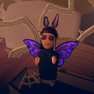

About Me
Hi name is Chloe Meyer, I'm currently a student at URI. I was born in China and I was raised in Brooklyn, NY. I like eating Sushi and Fencing, as well as Basketball and Kickboxing. I love to sing and dance, as well as play in Virtual Reality.

Fun Fact : As a kid I used to do Binary Coding.